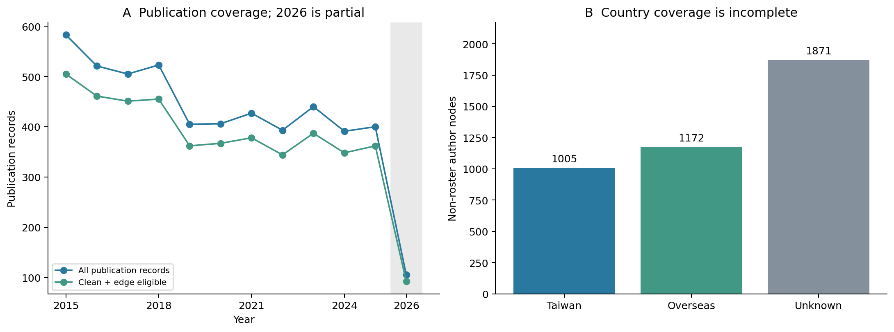
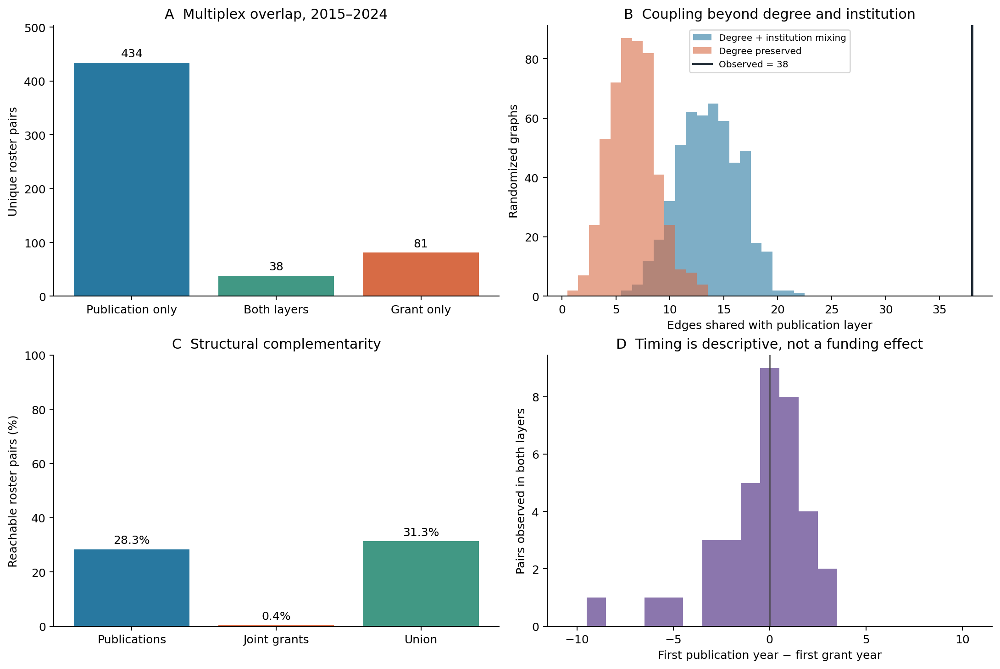
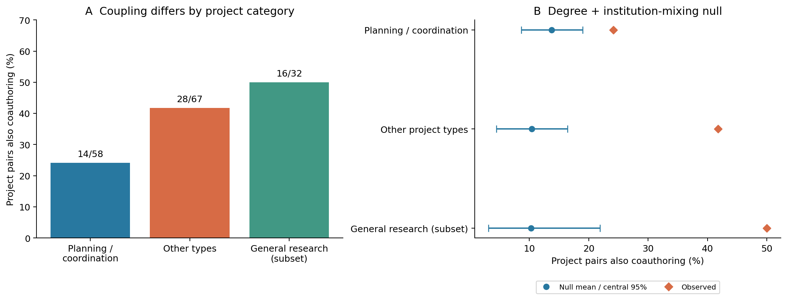
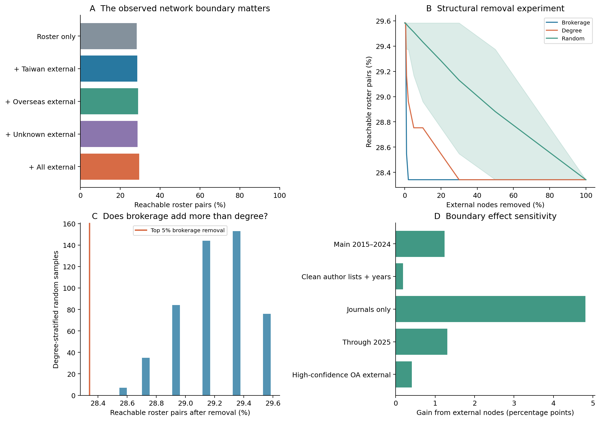
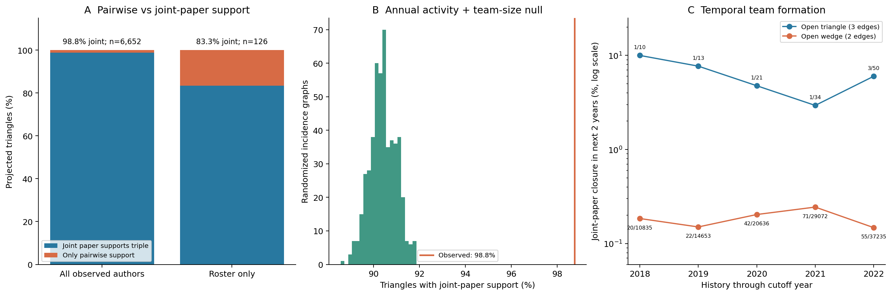

NetSciX 2027：三個研究題目的第一層分析
2026-09-10｜2015–2024 主分析，2015–2025 敏感度分析｜每種 null／隨機移除 499 次，seed 20270910
先看結論
我建議優先發展題目 A：計畫參與與論文共著的選擇性耦合。 它有清楚的多層網路問題、可追溯的合作對、保留度數與機構結構後仍存在的訊號，而且對較乾淨的論文子集與年份範圍相對穩定。題目 C 的高階結構也有訊號，但後續團隊形成的有效事件太少；題目 B 的全網連通效果小且對資料品質敏感。
建議工作標題：Selective Coupling of Project Participation and Coauthorship in a Scientific Multiplex。
中文：計畫參與與論文共著的選擇性耦合：台灣經濟學研究社群的多層網路。
| 排序 | 候選題目 | 已看到的訊號 | 主要限制 | 判斷 |
| 1 | A 多層耦合與互補 | 共著／計畫重疊 38 對；機構條件 null 平均 13.60 對 | 共同計畫是同名同年登錄推定；不是經費因果效果 | 最值得深化 |
| 2 | C 高階團隊結構 | 名冊三角形有共同論文支持 83.33%，null 平均 46.08% | 時間切點中 closed-triangle 新團隊事件很少；null 尚未保留 dyadic strengths | 方法感最接近 CEU，可作備選 |
| 3 | B 非名冊橋梁與邊界 | 加入全部外部作者，可達性只增加 1.24 個百分點 | 較乾淨資料下增益僅 0.19 個百分點 | 適合補充／方法敏感度，暫不作主題 |
這份文件是研究探索與選題依據，沒有把探索性 p 值當確認性檢驗，也沒有宣稱新的普遍定律或完成投稿稿件。排序依訊號、穩健性、事件量、資料假設與可形成的研究問題綜合判斷，不是按最小 p 值排序。
會議定位
NetSciX 2027 官方網站列出的會議日期為 2027 年 1 月 24–27 日，地點香港。一般 network science 主題仍在範圍內，另有 Network Science meets AI focus，這三題不必為了配合主題硬加入 AI。
官方投稿頁接受 ongoing research with preliminary results，要求兩頁 extended abstract：第 1 頁是本文，第 2 頁只有圖表與參考文獻。依官方日期頁，投稿截止為 2026-10-01 23:59 AoE（查閱日 2026-09-10）。官方的摘要 AI 使用規則限定文字編修用途；因此這裡提供可核對的研究探索，正式投稿論證與摘要應由研究作者自行形成與撰寫。
你說的「CEU 類型」，這裡解讀成以社會系統中的結構機制為核心，配合多層網路、高階互動與合適的 null model。CEU 本身有高階網路與 science of science 研究計畫，所以 C 的方法定位很貼近，但方法熱門不等於這份資料就有足夠的時間事件。
現有欄位支持什麼
主檔與 inactive 表合計 520 位名冊教師，其中 421 位在整份資料期間有活動。另有 4,048 位非名冊作者。論文 5,099 筆，計畫紀錄 1,975 筆；機構 27 個。年度 active 不可由整期 active 標記直接替代。
| 欄位群 | 可做的問題 | 分析使用方式／限制 |
| node_id、teacher_id、author_node_ids_json | 個人、合作對、完整團隊 | 主分析不再合併身分；保留既有作者節點 |
| paper_id、year、edge_eligible | 共著與時間網路 | 排除不可建邊論文；2026 不用來判斷下降趨勢 |
| project_family_key、member_teacher_ids_json、both_recorded_this_year | 多層耦合、同年合作 | 主分析要求兩人同年登錄；family 擴張版只作敏感度 |
| grant_category | 不同類型計畫的合作結構 | planning 與 other 比較為試跑後追加探索 |
| institution_code、department_zh、county、lat/lon | 機構聚集、空間／組織限制 | 目前 affiliation 快照，不能當歷史轉職／距離 |
| affil_country、affil_source | 外部作者國別與觀察邊界 | 國別缺失獨立一類，不能默認海外或台灣 |
| oa_match_confidence、oa_needs_review | 作者身分敏感度 | 高可信且無待審外部作者作保守子集 |
| n_citations_total、n_pubs_total、oa_primary_field | 後續研究者差異描述 | 是全生涯／目前快照，不當 2015–2024 的時間序列 outcome |
| author_list_complete、year_ambiguous、decision_notes | 品質與截斷敏感度 | 高階主分析排除不完整、模糊年份、明示只取前十人 |
| 性別、歷史職位、各論文逐年引用、實際計畫金額 | 本輪不支持 | 不從姓名推測性別，也不把個人總引用當單篇影響 |
完整欄位覆蓋表與年度覆蓋表均由程式產生。原有 README 中的歷史數字與目前 CSV 不完全一致，本報告以實際檔案重算為準。

年度與國別覆蓋（點圖可開啟原尺寸）全期間有 404 篇標記作者名單不完整、180 篇年份模糊、27 篇明示名單截斷。非名冊作者中 1,871/4,048（46.2%）沒有國別。2026 僅 105 筆論文，不能和已完整年度直接比較。
題目 A：多層網路中的重疊與互補
原始候選題名：Two Layers of Scientific Collaboration: Redundancy and Complementarity between Coauthorship and Joint Grants
問題不是「誰最中心」，而是：相同研究者之間的不同合作關係，是否有超出活動度與機構聚集的選擇性重疊？剩下的計畫關係又能否把共著層未連接的部分連起來？ 多層網路的基本框架見 Kivelä et al., 2014；合作社群的跨層機制已有 Battiston et al., 2016 等先例，不能只把兩層畫出來就宣稱方法創新。
主分析把每層聚合成簡單無向圖，母體固定 520 人。共著層 472 條邊，嚴格同年共同計畫層 119 條邊，其中 38 條同時存在。
| 測量 | 結果 |
| 共同計畫邊中也有共著 | 31.93% |
| 共著邊中也有共同計畫 | 8.05% |
| 兩層 Jaccard | 0.0687 |
| 只存在計畫層的合作對 | 81 |
| 只保留度數的 null 預期重疊 | 6.61，中央 95% 區間 3–11 |
| 再保留機構間邊數的 null 預期重疊 | 13.60，中央 95% 區間 8–19 |
| Observed / 機構條件 null 均值 | 2.79 倍 |
| 名冊最大連通分量：共著層 → 聯集 | 277 → 291 人 |
| 可達名冊 pair 比例：共著層 → 聯集 | 28.34% → 31.28% |

多層網路主分析（點圖可開啟原尺寸）解讀：整體 Jaccard 小，卻仍有高於條件 null 的重疊。 兩件事不矛盾：計畫層本身稀疏，但它選到的對象更常也是共著夥伴；同時仍有 81 對只在計畫層出現。聯集的連通性增加是實際結構量，不代表優於所有同度數隨機圖，也不是資源效率或資訊流動的因果估計。
敏感度表顯示，較乾淨論文、延伸到2025、計畫採 family 推定後，計畫邊重疊比例落在 27.86%–31.93%。目前沒有看到結果完全由年份截斷或模糊作者名單造成。
兩個 null 的上尾探索性 Monte Carlo 參考值為 0.0020 與 0.0020。這不是精確 population p 值；499 次模擬的最小上尾數值為 0.0020，且分析含多個相關的探索檢驗。受限交換保留每位教師計畫度數與機構 pair 邊數，平均交換接受率 17.7%、原始邊留存率 19.9%，但尚未完成正式 MCMC 收斂診斷。
計畫類型：值得深化的新切入點
| 類型 | 合作對 | 也有共著 | 重疊比例 | 機構條件 null 均值 |
| Planning / coordination | 58 | 14 | 24.14% | 7.99 對 |
| Other project types | 67 | 28 | 41.79% | 6.96 對 |
| General research (subset) | 32 | 16 | 50.00% | 3.29 對 |

計畫類型差異（點圖可開啟原尺寸）這個差異提示可以研究 functional differentiation：規劃／協調型計畫、一般研究計畫，可能召集不同的合作關係。不過 grant_category 是計畫分類，並不是對實際協調行為的直接測量；而且樣本小、有些 pair 同時參與多類計畫。因此目前應寫成「類型差異的初步證據」，不能宣稱 funding coordination 的完整機制已被識別。
計畫類型分析是在199次試跑後追加，已記在 ANALYSIS_PLAN.md。general research 是 other 的子集，各類 pair 不互斥。
目前不支持的說法
不能寫「拿到共同計畫促成之後論文」。僅看兩層均出現、且論文年份清楚的 37 對：計畫先出現 14 對，共著先出現 14 對，同年 9 對；其中 12 對碰到 2015 左邊界。這個條件樣本與粗年度時間無法識別方向或因果。
下一層應加入：計畫 team incidence null、跨期新共著 risk set、既有共著與研究活動控制、至少一個未用於設計的時間 holdout，以及共同計畫 family 身分核查。
題目 B：非名冊橋梁與觀察邊界
Who Connects the Roster? Boundary Spanners and the Observed Robustness of Scientific Collaboration
問題：把非名冊作者刪掉，是否錯失連接台灣名冊教師的路徑？這與網路邊界定義、抽樣偏差、結構穩健性相關；Kossinets 的 missing-data 研究說明這類測量本來就可能受觀察機制影響。
本輪觀察到 3,382 個參與可建邊論文的非名冊節點，其中 50 個有正的跨機構 brokerage score。score 是：該外部作者共同連接、分屬不同機構、且尚無直接共著的名冊 pair 數。它不是 betweenness centrality，也不是 causal influence。
| 網路邊界 | 最大名冊連通分量 | 可達名冊 pair 比例 |
| Roster only | 277 | 28.34% |
| + Taiwan external | 278 | 28.55% |
| + Overseas external | 280 | 28.96% |
| + Unknown external | 279 | 28.75% |
| + All external | 283 | 29.58% |

非名冊橋梁分析（點圖可開啟原尺寸）加入全部已觀察外部作者，最大名冊分量只由 277 增至 283 人，可達性增加 1.24 個百分點。這是小幅增加，不是「沒有外部作者就崩潰」。較乾淨樣本只增加 0.19 個百分點；僅期刊樣本則增加 4.81 個百分點，顯示樣本定義會實質改變結論。
移除 brokerage 排名前5%（169 人）後，可達性為 28.34%；log2 度數分層隨機移除平均 29.22%。targeted removal 確實比這個 matched benchmark 更集中打掉少量橋梁，但不應因統計參考值小就忽略絕對效果小。
為什麼效果可能小？每篇論文的 clique projection 已直接連起同篇的名冊作者；外部作者只有跨不同論文重複出現時，才可能帶來新的名冊間路徑。另一方面，外部作者的拆分身分會破壞這種跨篇橋接，未觀察到的外部–外部論文也不在資料中。
因此目前適合作為 A 的資料邊界／robustness 補充，而非以「全球橋梁」為主標。若想深化 B，先核查高 brokerage 節點的身分、外部觀察覆蓋及 journal-only 效果差異。
題目 C：高階團隊與兩兩投影
Beyond Projected Triangles: Higher-Order Team Formation in Scientific Collaboration
問題：三個人各自兩兩合作形成三角形，是否等同三人真正一起寫過論文？這是 hypergraph／simplicial representation 的核心區分。Benson et al., 2018已研究 simplicial closure；新意需要來自這個社群的組織機制、抽樣特性或更嚴格的對照，而不是重新命名既有統計量。
本題使用 4,058 篇可建邊、名單完整、年份清楚、未明示截斷的論文。每篇作者集合是一個高階事件，三人共同出現在四人以上論文也算 supported triple。
| 群體 | 投影三角形 | 共同論文支持 | 只有兩兩支持 | 支持比例 | incidence null 均值 |
| 全部已觀察作者 | 6652 | 6569 | 83 | 98.75% | 90.41% |
| 純名冊 | 126 | 105 | 21 | 83.33% | 46.08% |

高階互動分析（點圖可開啟原尺寸）靜態訊號存在：實際共同論文支持比例高於年度活動與團隊大小控制後的 null。 這表示不是單憑每人發表數和每篇人數就能重現觀察結果。但此 null 沒有保留機構混合、已形成的 dyadic weights 或長期夥伴偏好，故不能直接宣稱識別了「不可約的高階效應」。名冊中心的採樣也可能改變全作者比較。
時間分析要保守：以截至2022年的歷史為例，兩邊 wedge 的後續兩年形成共同論文為 55/37,235，三邊但尚未共同合著的 open triangle 為 3/50。表面比率差大，但後者只有3次事件，不能直接支持穩健的預測模型。
五個切點的 open-triangle closure 合計只涉及 5 組不同三人組；跨切點重複候選／事件不能當獨立觀測。完整的 closure risk sets 與 事件追查表已存檔。
因此 C 適合當高階方法備案：先補 institution-preserving incidence null，或設計保留兩兩合作強度的 temporal benchmark，再決定要研究「團隊形成」還是「重複團隊與觀察偏差」。
建議接下來把 A 發展成什麼
核心問題：在控制研究者活動與機構合作機會後，計畫合作與論文共著為何仍選擇性重疊？這個耦合是否隨計畫功能而改變？
可檢驗假說：一般研究類共同計畫與共著層的耦合較強；規劃類計畫更常包含尚無直接共著的合作對。這是由本輪結果產生的新假說，必須用更嚴格的 null 或保留時間樣本再次檢驗。
1. 先檢查共同計畫資料：family 去重、同名異計畫、計畫類型、每年是否真有共同成員。優先看實際支撐重疊與橋接的記錄。
2. 把 paper 和 project 都保留成 researcher–event bipartite data，建立保留團隊大小、年度個人活動與機構組成的 null。現有 degree-preserving null 只控制 projected graph 層級。
3. 若做時間預測，定義「此前未共同發表」的研究者 pair risk set，包含從未出現共同計畫的對照；避免只分析最後兩層都有的合作對。比較度數／共同鄰居 baseline 與加入計畫層後的 incremental predictive value。
4. 使用 chronological holdout，明確處理教師名冊回溯、2015 左截斷與最近年度右截斷。報告效果大小與網路相依性，不把 pair 當獨立 iid 樣本。
5. 把投稿的主圖縮成三部分：兩層結構與重疊、條件 null、計畫類型的耦合差異。B 作 robustness，C 留待更深入的方法分析。
第一層已足以支持「值得把 A 做深」這個選題決策，但還不足以把計畫當作資助衝擊，或宣稱一個已驗證的社會生成機制。這裡只做了針對性的文獻定位，尚未完成完整的新穎性檢索。
重現、驗證與檔案
所有腳本只讀來源 CSV，圖表與衍生表都在 final_plan/analysis/。沒有執行或修改 pipeline.py，也沒有修改既有互動地圖。
python3 final_plan/analysis/code/test_analysis.py
python3 final_plan/analysis/code/analyze.py --reps 499 --seed 20270910
python3 final_plan/analysis/code/report.py
- 分析程式：三題主分析、null、敏感度、PNG／SVG 圖與統計表。
- 計算定義測試：6 個 synthetic checks，涵蓋橋梁／母體分母、三角形與共同團隊的區分、兩類 null 不變量及 Monte Carlo 計算。
- results.json：所有報告數字、參數、套件版本與 32 份來源 CSV 的 SHA-256。程序結束時重新檢查來源檔案未變。
- ANALYSIS_PLAN.md：第一輪設計與事後追加探索記錄。
- 圖均附 .caption.txt 說明；PNG 可直接看，SVG 可繼續排版。圖上未放研究者姓名。
null 區間代表模擬分布的中央95%，不是觀察效應的抽樣信賴區間；移除曲線是既有圖上的結構實驗；因果關係、海外整體網路、真實資訊流動都不在這些計算的識別範圍內。